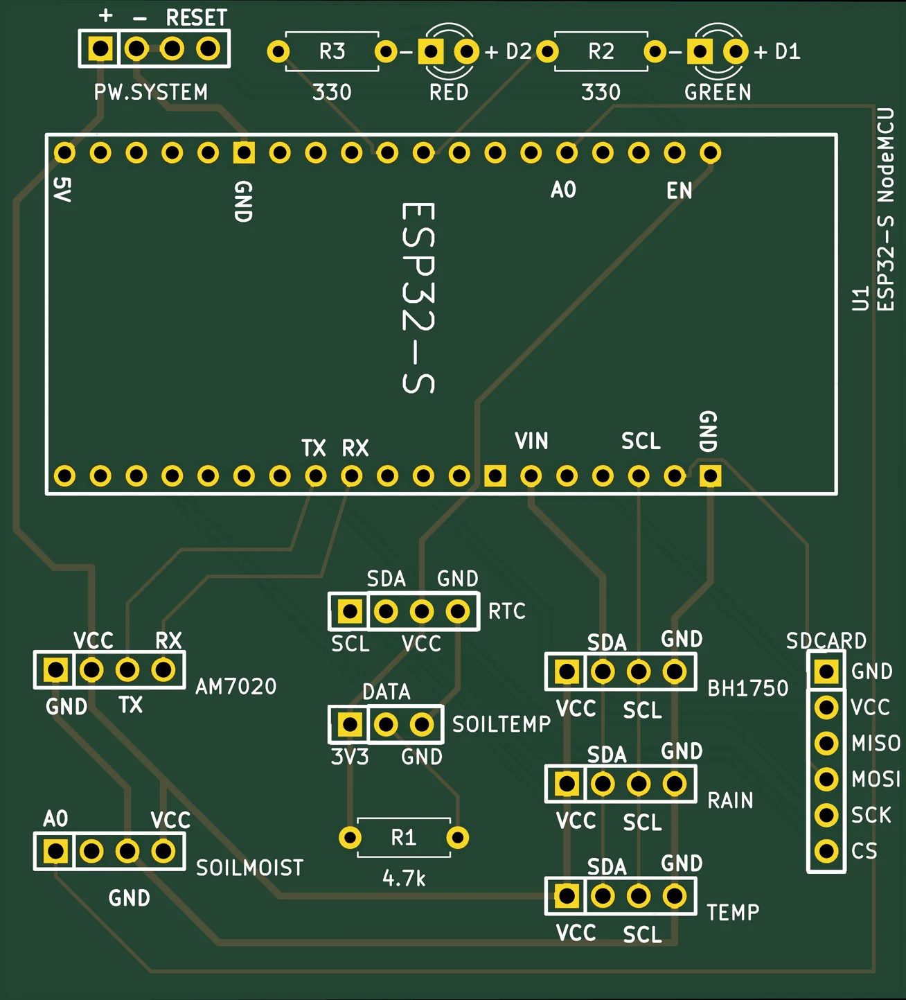
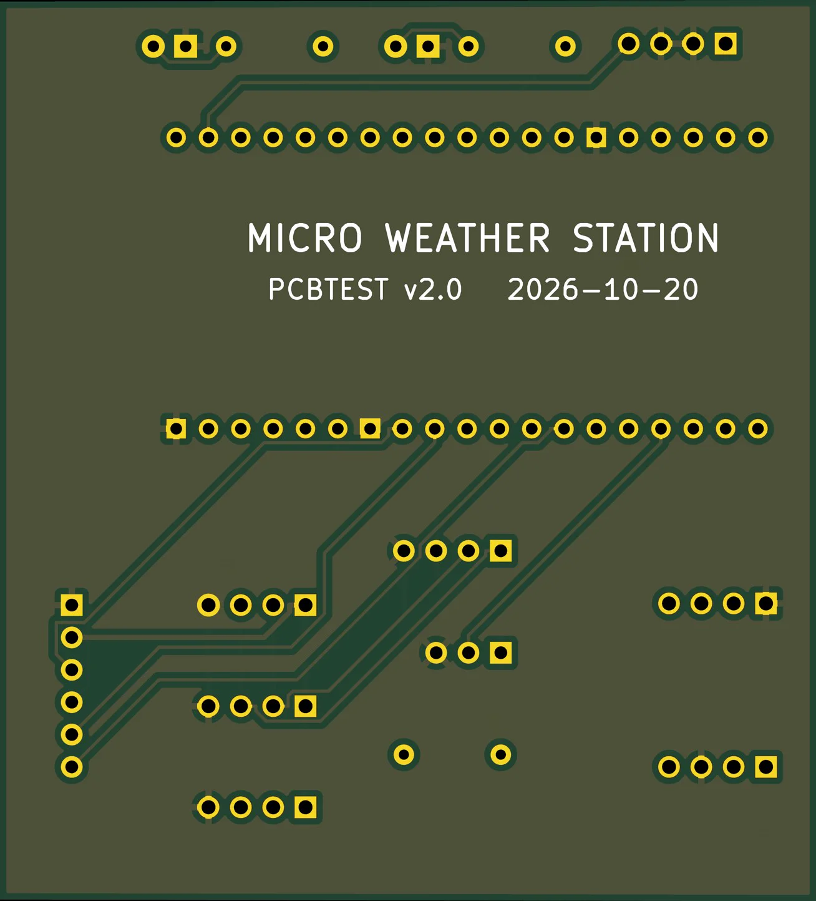
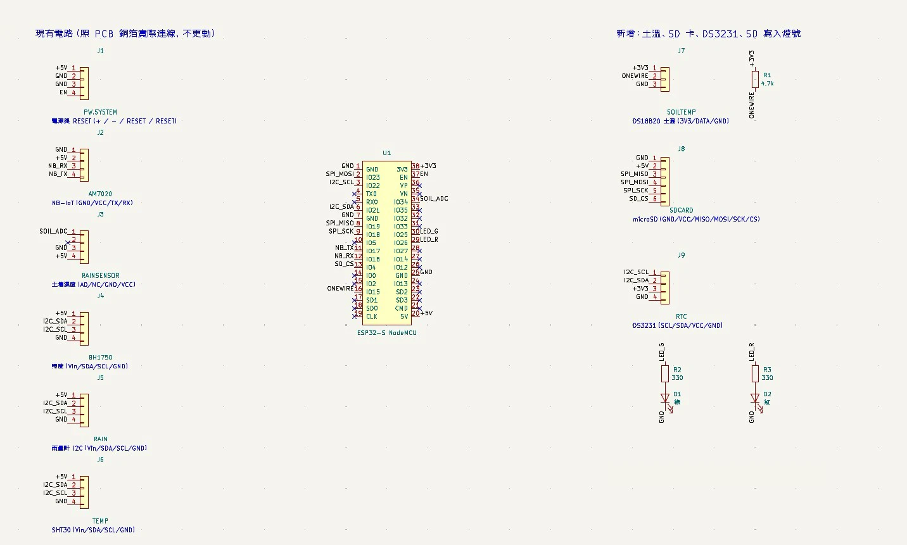
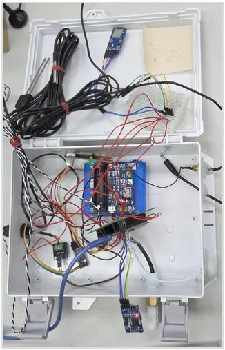

專案概要
- 板層／板材
- 雙層 FR-4，1.6 mm
- 尺寸
- 64 × 71 mm
- 主控
- ESP32-S NodeMCU
- 通訊
- NB-IoT・MQTT
- 最小線寬／間距
- 0.25／0.20 mm
- 檢查
- ERC 0・DRC 0・一致性 0
實驗室的微氣象站原本以飛線與杜邦線拼接，容易鬆脫、不好維護，斷網時也會遺失資料。我把它整理成正式的雙層電路板：保留原有感測器與 NB-IoT 模組、沿用原板型與原有走線，並加上 microSD 本機記錄、DS3231 時鐘、DS18B20 土壤溫度與兩顆寫入狀態燈。背面整片鋪 GND，讓訊號回流路徑完整。
板上的韌體也由我撰寫：讀取各感測器、透過 NB-IoT 以 MQTT 上傳，同時寫一份到 SD 卡，每天自動建立一個記錄檔。因為電路和韌體都是自己做的，畫板時可以直接核對每支腳位與韌體設定是否一致。
電路板


原理圖


模組與介面
| 模組 | 用途 | 介面 |
|---|---|---|
| AM7020 | NB-IoT 上傳資料 | UART |
| BH1750 | 光照度 | I²C |
| SHT30 | 空氣溫溼度 | I²C |
| 雨量計 | 雨量 | I²C |
| 土壤濕度感測器 | 土壤濕度 | 類比（ADC） |
| DS18B20 | 土壤溫度（新增） | 1-Wire，4.7 kΩ 上拉 |
| microSD | 本機資料記錄，每天自動建立一個檔案（新增） | SPI |
| DS3231 | 即時時鐘（新增） | I²C |
| 綠／紅 LED | 運作狀態燈號（新增） | GPIO，330 Ω 限流 |
交件前驗證
接線表是唯一依據，檢查沒過就不出檔。
- 寫接線表：每條連線逐一列出，沒有可靠來源的腳位不畫。
- 產生電路板：以 KiCad 腳本放置元件與走線，座標可重現。
- 自動比對連線：原理圖與每個焊盤的網路都對照接線表，並核對韌體腳位。
- 三項檢查歸零：ERC、DRC、原理圖與電路板一致性皆為 0，無未連接線路。
- 輸出 Gerber：只輸出工廠需要的層與鑽孔檔。
原型實測

- 連續運轉
- 22 小時（跨夜）
- MQTT 上傳
- 44／44 筆成功
- 記錄間隔
- 30 分鐘，沒有漏筆
上傳的資料與 SD 卡記錄一致。先在原型上確認功能穩定，才把接線畫進新版電路板，避免把沒驗證過的設計直接送去打樣。
新版電路板已完成設計、正在打樣，到板後會再做同樣的測試。